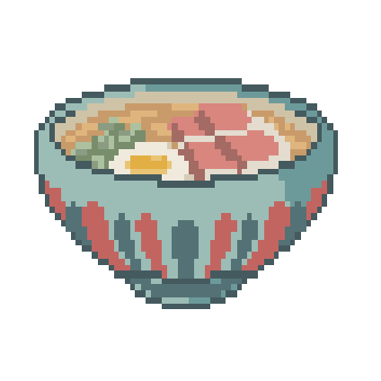

Signature Dishes
Spicy Ramen
Sashimi
Bento Box

Sushi Special


Miso soup
A classic Japanese soup made with savory miso paste and flavorful dashi stock, combined with soft cubes of tofu, rehydrated wakame seaweed, and thinly sliced scallions for a deliciously warming and comforting bowl of soup. Add your choice of additional ingredients, such as mushrooms or shrimp, to make it your own. Perfect as a starter or a light meal on its own.

Ramen
A hearty and satisfying Japanese noodle soup, featuring a rich and flavorful broth made from simmering pork bones, chicken, or seafood with a blend of aromatics and spices. Served with chewy and springy wheat noodles, tender slices of protein such as pork belly, chicken or beef, and an array of toppings such as marinated bamboo shoots, wood ear mushrooms, and a perfectly soft boiled egg. Choose from various broth styles like shoyu, miso or tonkotsu, and spice levels to create your own perfect bowl of comfort.
Spicy Ramen
Our signature ramen dish, featuring a rich and complex broth made with pork bones, chicken, and a blend of spices and aromatics, then kicked up a notch with a fiery dose of chili oil or hot sauce. Served with chewy wheat noodles, tender slices of protein such as pork belly, chicken or beef, and a variety of toppings such as spicy marinated bamboo shoots, wood ear mushrooms, and a perfectly soft boiled egg. Customize your spice level to your liking and prepare to be warmed up from the inside out. Perfect for those who love a little heat with their comfort food.
Classic Bento Box
Indulge in our delicious bento box, featuring crispy tempura shrimp and succulent chicken legs, served with a generous portion of fluffy and fragrant rice. Our tempura shrimp is lightly battered and fried to perfection, while our chicken legs are seasoned with a savory blend of spices and grilled to juicy perfection. Served with a side of tangy and sweet dipping sauce for the shrimp, and a flavorful soy-based sauce for the chicken. All packed together in a convenient and elegant bento box, perfect for a quick and satisfying meal on the go.
Shashimi
Experience the delicate and fresh flavors of our sashimi with a unique twist - a delicious egg wrap! Our chef has expertly crafted this dish using the finest cuts of fresh sashimi, including salmon, tuna, and whitefish, which are delicately wrapped in a light and fluffy egg omelet. The egg wrap adds a perfect touch of sweetness and texture to the dish, while allowing the full flavors of the sashimi to shine through. Served with a side of wasabi and soy sauce for an extra kick of flavor. Perfect for sushi lovers looking for a new and exciting way to enjoy their favorite dish.
Sushi Special
Enjoy a delightful selection of our chef's best sushi creations, including nigiri sushi with fresh tuna, salmon, and yellowtail, and maki sushi rolls like our signature California Roll. Served with pickled ginger, wasabi, and soy sauce for dipping.

Dragon Roll
Our signature sushi creation, the Dragon Roll, is not only delicious, but also shaped like a dragon! This eye-catching roll features succulent shrimp tempura, creamy avocado, and crisp cucumber, all wrapped in a layer of perfectly seasoned sushi rice and nori seaweed. The roll is then topped with slices of fresh eel, which are arranged to create a dragon-like appearance. Served with a side of pickled ginger, wasabi, and soy sauce for dipping, this unique and visually stunning roll is sure to impress sushi lovers of all ages.
Home Bento Box
Treat yourself to our delicious bento box, featuring a delightful combination of flavors and textures that will make you feel right at home. Our bento box includes tender and flavorful slices of octopus, a variety of rice sushi rolls made with fresh fish and perfectly seasoned rice, and succulent shrimp, all served with a generous portion of steaming hot rice. Served with a side of pickled ginger, wasabi, and soy sauce for dipping, this bento box is perfect for sushi and seafood lovers looking for a tasty and convenient meal.
Dessert

Classic cake
Our classic cake features moist and fluffy layers of vanilla cake, frosted with creamy and decadent buttercream frosting. One of our most popular dishes, perfect for anyone.

Strawbery Fudge Ice cream
Indulge in our delectable strawberry fudge ice cream sundae, one of our most popular dishes! Our sundae features a generous scoop of creamy and refreshing strawberry fudge ice cream, topped with a sweet and tart cherry and a crunchy cookie for the perfect balance of flavors and textures.
Beverages
Tea
Enjoy our carefully curated selection of premium teas, perfect for any tea lover. Choose from a variety of flavors and styles, including classic black teas, refreshing green teas, soothing herbal teas, and aromatic fruit and spice blends.